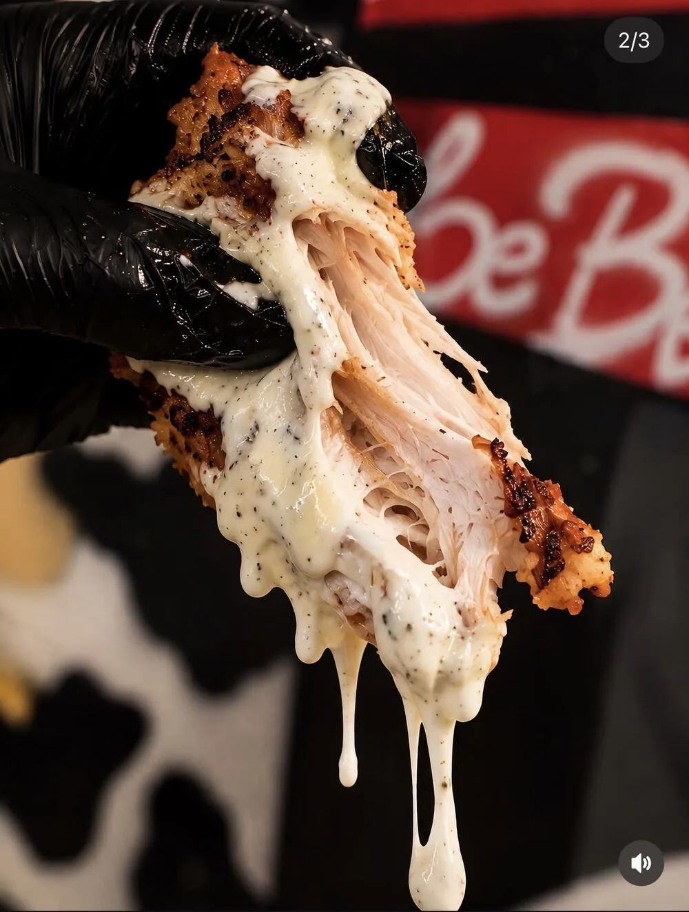

The Berlin Connection
Berliner Spirit.
Osnabrücker Boden.
Kein 08/15-Döner aus dem Katalog. 030 steht für die Vorwahl von Berlin — für die Haltung, den Style und den Anspruch, mit dem dort gerade neu gedacht wird, was ein Döner sein kann. Saftig mariniertes Fleisch, Saucen die frisch per Pinsel aufgetragen werden, und Pommes direkt aufs Fladenbrot. Diese Energie steht jetzt am Neumarkt in Osnabrück — seit dem 2. November, aufgebaut von zwei Brüdern in den Räumen, in denen vorher Klamotten hingen.
3
Brotsorten
0
Standard
11—23
Uhr, täglich

Handwerk, kein Fast Food